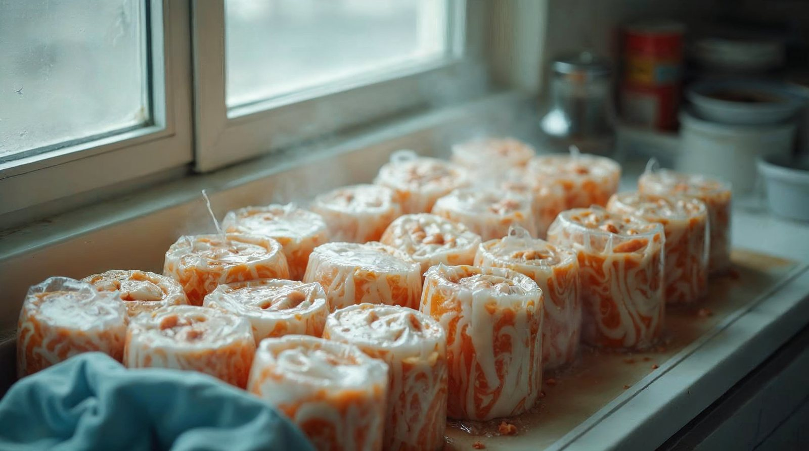
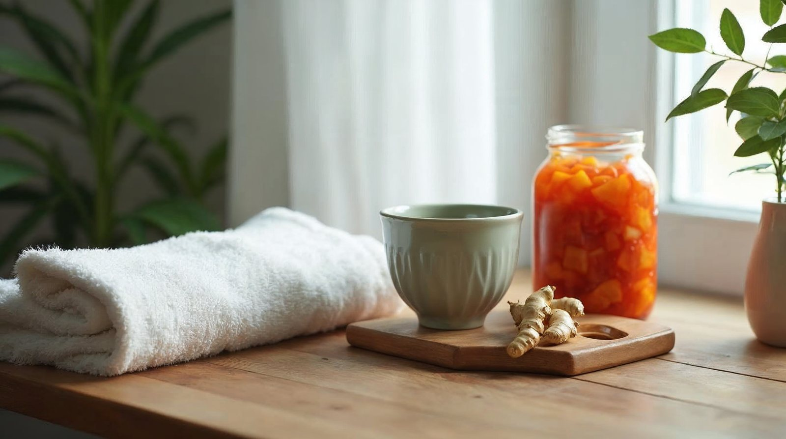
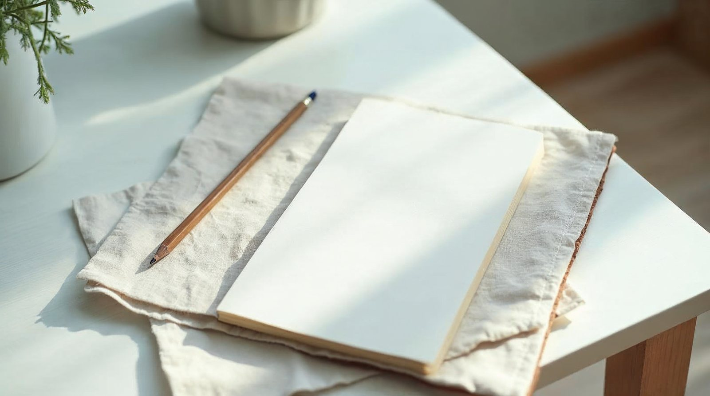

이종호 한의사 감수좋은꿈참사랑한의원 대표원장 (한의사 면허번호 19769)발행 2026-11-25 · 수정 2026-11-26
이 글의 차례
김장 다음 날 손목과 엄지 쪽이 시큰하다면 먼저 며칠은 쥐고 비트는 일을 줄이고, 어떤 동작에서 아픈지 살펴보는 것이 좋습니다. 절인 배추를 들어 옮기고 속을 버무리며 꼭 짜는 일은 평소 잘 쓰지 않던 힘을 하루에 몰아 쓰게 합니다.
상도동 골목에서도 김장철이면 병뚜껑을 열거나 행주를 짤 때 손목이 찌릿하다는 이야기를 자주 듣습니다. 손을 덜 쓰면서 사나흘 사이 시큰함이 조금씩 줄어드는지 보는 것이 첫 기준이고, 붓기가 뚜렷하거나 손가락이 저리다면 지켜보기보다 확인을 먼저 권합니다.
왜 이런 불편이 생길 수 있나요
- 무거운 배추를 한 손으로 쥐고 드는 동작이 반복되면 손목과 엄지 쪽 힘줄에 부담이 몰릴 수 있습니다.
- 물기를 짜며 손목을 비트는 동작이 평소보다 훨씬 많아집니다.
- 엄지를 벌린 채 배추 잎 사이에 속을 넣는 동작은 엄지 아래쪽 손목에 힘이 계속 실리게 합니다.
- 찬물과 찬 바닥에서 오래 일하면 손과 팔 근육이 굳기 쉽고, 고무장갑 안에 땀이 찼다 식기를 반복하면 손이 더 뻣뻣하게 느껴질 수 있습니다.
- 쉬는 시간 없이 한 번에 몰아서 하고, 김장 뒤에도 김치통 정리와 연말 설거지가 이어지면 피로가 풀릴 틈이 없습니다.
- 한의학에서는 손목의 불편과 함께 몸 전체가 지쳐 있는지, 손발이 찬 편인지도 함께 살핍니다.
왜 김장 당일보다 다음 날에 더 시큰할까요
김장하는 날에는 일을 마쳐야 한다는 생각에 손목의 피로를 잘 느끼지 못합니다. 몸이 긴장한 채 움직이는 동안에는 불편이 가려져 있다가, 하룻밤 쉬고 난 뒤 굳은 힘줄과 근육이 움직이기 시작하면서 시큰함이 또렷해지는 경우가 많습니다.
또 김장 당일 밤에는 손이 붓고 열감이 남아 있어도 바로 잠들어 버리기 쉽습니다. 다음 날 아침 첫 동작인 이불 개기나 세수에서 찌릿함을 먼저 느끼는 것도 이 때문입니다. 아침의 뻣뻣함이 손을 조금 움직인 뒤 풀리는지, 하루 내내 같은지를 구분해 두시면 도움이 됩니다.
엄지 쪽 시큰함은 다른 손목 불편과 어떻게 구분해 볼까요
손목이 아프다고 해도 아픈 자리와 아픈 동작에 따라 살피는 방향이 꽤 달라집니다. 진료실에서 아픈 곳을 손가락 하나로 짚어 보시라고 먼저 부탁드리는 것도 그 때문입니다.
- 엄지 아래 손목 바깥쪽이 시큰하고, 엄지를 감싸 쥔 채 손목을 새끼손가락 쪽으로 꺾을 때 찌릿하다면 엄지를 움직이는 힘줄 쪽 부담을 먼저 떠올립니다.
- 엄지·검지·중지 끝이 저리고 밤에 손이 저려 깬다면 손목 가운데를 지나는 신경 쪽 문제일 수 있어 따로 살핍니다.
- 새끼손가락 쪽 손목이 아프고 문고리를 돌리거나 손을 짚고 일어날 때 불편하다면 손목 바깥쪽 연골 주변의 부담을 함께 봅니다.
- 손가락 마디가 붓고 아침에 한참 뻣뻣하며 양손이 같이 불편하다면 김장 탓으로만 보지 않고 관절 상태를 따로 확인하시길 권합니다.
이 구분은 스스로 진단하시라는 뜻이 아니라, 어디가 어떻게 아픈지 설명하기 쉽게 정리해 두시라는 뜻입니다. 같은 엄지 쪽 통증이라도 붓기와 열감, 저림이 있는지에 따라 진찰 순서가 바뀝니다.
먼저 이렇게 여쭙니다
- 시큰한 곳이 엄지 쪽인가요, 새끼손가락 쪽인가요, 손목 한가운데인가요?
- 행주 짜기, 병뚜껑 열기, 냄비 들기 중 어떤 동작이 가장 불편한가요?
- 붓거나 열감이 있나요? 아침에 더 뻣뻣한가요?
- 손가락이 저리거나 밤에 손이 저려 깬 적이 있나요?
- 김장 뒤에도 무거운 통을 옮기는 일이 이어졌나요?
- 평소 육아, 요리, 키보드나 휴대폰 사용처럼 손목을 많이 쓰는 일이 있나요?
- 예전에도 같은 자리가 아파서 치료를 받거나 보호대를 찬 적이 있나요?
- 아픈 쪽이 평소 많이 쓰는 손인가요, 반대쪽 손인가요?
이 질문들은 김장이 계기였는지, 원래 쌓여 있던 부담이 김장으로 드러난 것인지를 가려 보기 위한 것입니다. 앞의 경우라면 며칠 쉬는 것이 중심이 되고, 뒤의 경우라면 평소 손 쓰는 습관까지 함께 바꿔야 할 때가 많습니다.

일상에서 먼저 해 볼 수 있는 것
- 이삼 일은 걸레와 행주를 비틀어 짜는 일을 줄이고 눌러서 물기 빼기
- 무거운 김치통은 두 손으로 몸 가까이 붙여 들거나 나눠 담기
- 김치통을 나눠 드릴 때는 바퀴 달린 장바구니나 수레를 쓰고, 상도동처럼 언덕길이 많은 동네에서는 한 번에 많이 들고 오르내리지 않기
- 병뚜껑은 고무 패드나 마른 행주를 대고 손바닥 전체로 돌리기
- 휴대폰은 탁자에 두거나 두 손으로 나눠 쓰고, 엄지로만 오래 누르지 않기
- 붓고 열감이 있으면 잠깐 차갑게, 굳은 느낌이면 따뜻하게 하기
- 손목을 꺾지 않고 가볍게 쥐었다 펴기를 틈틈이 하기
- 다음 김장 때는 한 시간에 한 번 손을 털고 쉬는 시간 정하기
김장 뒤 사나흘은 이렇게 지켜보세요
첫날은 손목을 덜 쓰는 것만으로도 충분합니다. 손목이 붓고 뜨겁다면 얇은 수건으로 감싼 찬 팩을 10분 안쪽으로 대고, 시큰함만 있다면 미지근한 물에 손을 담근 채 천천히 쥐었다 펴 봅니다.
둘째 날과 셋째 날에는 아침에 일어나 주먹을 쥐었을 때의 느낌을 첫날과 비교합니다. 행주를 살짝 비틀어 보았을 때 찌릿함이 줄었는지, 같은 병뚜껑이 조금 더 쉽게 열리는지가 알아보기 쉬운 기준이 됩니다.
나흘째쯤 집안일을 다시 늘릴 때는 한꺼번에 예전처럼 돌아가지 않습니다. 설거지는 그릇을 나눠 몇 번에 하고, 장보기는 가까운 곳부터 다시 시작합니다. 다시 시큰해지면 하루쯤 손을 쉬게 한 뒤 천천히 늘립니다. 무거운 장바구니는 이 시기에 가족에게 부탁해 두시면 마음이 한결 편합니다.
이 기간에 아픈 정도를 0부터 10까지 숫자로 하루 한 번 적어 두시면, 줄어드는 흐름인지 그대로인지 스스로 알아보기 쉽고 진료 때 이야기도 훨씬 구체적이 됩니다. 찜질을 한 날과 안 한 날, 손을 많이 쓴 날을 한 줄씩 덧붙여 두면 무엇이 손목에 맞았는지도 함께 보입니다.
찜질과 파스, 보호대는 어떻게 쓰면 좋을까요
찜질은 손목의 상태에 맞춰 고릅니다. 만졌을 때 반대쪽보다 뜨겁고 부어 있다면 처음 하루 이틀은 차갑게, 붓기 없이 뻣뻣하고 묵직하다면 따뜻하게 하는 쪽을 먼저 해 봅니다. 어느 쪽이든 피부에 바로 대지 말고 수건을 한 겹 두르고, 한 번에 15분을 넘기지 않습니다.
파스는 붙인 자리가 가렵거나 붉어지면 바로 떼고, 같은 자리에 하루 종일 겹쳐 붙이지 않습니다. 보호대는 무거운 것을 들거나 오래 손을 써야 하는 시간에만 차고, 잘 때나 쉴 때는 풀어 손목이 숨을 쉬게 둡니다.
엄지까지 감싸는 보호대와 손목만 감는 밴드는 쓰임이 다릅니다. 아픈 자리가 엄지 쪽이라면 손목 밴드만으로는 엄지 움직임이 그대로라 기대만큼 편하지 않을 수 있어, 진료 때 보호대를 가져오시면 맞는지 함께 봅니다.

상황별 예시
- 예를 들어 어르신이 며칠에 걸쳐 많은 양을 혼자 절이고 버무린 경우, 엄지 쪽 손목이 붓고 행주를 짤 때마다 찌릿할 수 있습니다. 이때는 남은 뒷정리를 가족과 나누고 사나흘 손을 덜 쓰면서 시큰함이 줄어드는지 먼저 봅니다.
- 예를 들어 아기를 안고 지내는 육아 중인 분이 친정 김장까지 도운 경우, 아기를 받쳐 드는 동작과 김장 동작이 겹쳐 엄지 쪽 부담이 쌓이기 쉽습니다. 아기를 들 때 손목을 꺾지 말고 팔 전체로 받치는 자세를 함께 연습해 볼 수 있습니다.
- 예를 들어 평일에는 키보드와 마우스를 오래 쓰는 직장인이 주말에 김장을 한 경우, 월요일 출근 뒤 마우스를 쥘 때 불편이 이어질 수 있습니다. 며칠은 마우스를 몸 가까이 두고 손목 아래를 받쳐 쓰는 것부터 바꿔 봅니다.
스스로 점검해 보세요
- 시큰한 자리가 엄지 쪽인지 손목 가운데인지 손가락으로 짚어 보았다.
- 행주 짜기, 병뚜껑 열기, 휴대폰 쥐기 가운데 아픈 동작을 골라 두었다.
- 아픈 쪽 손목이 반대쪽보다 부어 보이거나 뜨거운지 비교해 보았다.
- 손가락 끝이 저리거나 밤에 손이 저려 깬 적이 있는지 떠올려 보았다.
- 손을 덜 쓴 날과 많이 쓴 날의 다음 날 아침을 비교해 보았다.
- 김장 전에도 손목이 불편했던 적이 있는지 돌아보았다.
얼마나 지켜보고 언제 상담할까요
- 손을 덜 쓰면서 사나흘 사이 시큰함이 조금씩 줄어든다면 생활 관리를 이어 가며 지켜볼 수 있습니다.
- 일주일이 지나도 같은 동작에서 아픔이 그대로이거나, 집안일을 다시 시작하자마자 도진다면 진료에서 아픈 자리를 확인해 보시길 권합니다.
- 두 주가 넘어도 줄지 않거나 밤에도 욱신거린다면 더 미루지 않습니다.
손목을 쉬게 하는 동안 해 볼 가벼운 움직임
쉬게 한다는 것이 손을 전혀 움직이지 않는다는 뜻은 아닙니다. 아프지 않은 범위에서 조금씩 움직여 두면 굳는 느낌을 덜 수 있습니다. 아래 움직임은 시큰함이 심하지 않은 날에만, 아프지 않은 데까지만 해 보세요.
- 손을 탁자 위에 편하게 올려놓고 손가락을 하나씩 천천히 접었다 펴기
- 손목을 꺾지 않은 채 손바닥을 위아래로 뒤집기를 열 번쯤 반복하기
- 미지근한 물속에서 손가락을 벌렸다 모으기
움직인 뒤 시큰함이 더 커지거나 다음 날 아침이 더 불편하다면 그 움직임은 잠시 멈춥니다. 어떤 움직임까지 괜찮은지는 진료 때 아픈 자리를 보고 함께 정해 드립니다.
다음 김장을 위해 미리 바꿔 볼 것은 무엇일까요
손목 불편은 김장이 끝난 뒤보다 준비하는 단계에서 줄일 수 있는 부분이 많습니다. 해마다 같은 자리가 아팠다면 일하는 방식부터 조금 바꿔 보시길 권합니다.
- 절인 배추는 한 포기씩 쥐어 들지 말고 채반째 옮기거나 두 사람이 나눠 들기
- 속을 넣을 때는 엄지로만 밀어 넣지 말고 손바닥 전체로 펴 바르듯 하기
- 고무장갑 안에 얇은 면장갑을 끼워 손이 덜 차고 덜 미끄럽게 하기
- 절이기·씻기·버무리기를 하루에 몰지 말고 이틀로 나누기
- 손목이 약한 분은 칼질이나 짜는 일 대신 양념 섞기처럼 쥐는 힘이 덜 드는 일을 맡기
김장은 가족이 함께하는 일인데도 힘든 일이 한 사람에게 몰리기 쉽습니다. 손목이 약한 분이 계시다면 미리 역할을 나눠 두는 것만으로도 다음 해의 불편이 달라질 수 있습니다.

한의원에서 함께 살필 수 있는 경우
- 김장이나 명절 준비 뒤마다 손목 통증이 반복되는 경우 아픈 지점과 불편한 동작을 함께 살핍니다.
- 팔꿈치와 어깨까지 뻐근함이 이어지는 경우 팔 전체의 긴장을 함께 살핍니다.
- 손이 차고 저린 느낌이 함께 있는 경우 잠과 손의 온기도 이어서 여쭙니다.
좋은꿈참사랑한의원에서는 첫 방문 때 맥부터 짚으며 김장을 언제, 얼마나, 어떤 일을 맡아 하셨는지 여쭙고, 그날 몸의 피로와 손발의 찬 정도를 살핍니다. 그다음 손목과 엄지 주변을 눌러 아픈 자리와 붓기를 확인하고, 필요하다고 판단될 때 초음파로 힘줄 주변을 함께 봅니다.
상태에 맞춰 침·약침·추나 등을 정하고, 귀가 전에는 손 쓰는 방법과 집에서 지켜볼 점, 다음 방문 때 비교할 동작을 알려 드립니다.

이렇게 기록해 오시면 상담이 쉬워집니다
- 통증이 시작된 날과 그날 한 일(배추 포기 수, 일한 시간)
- 아픈 동작 두세 가지와 아픈 정도(0~10)
- 붓기, 열감, 저림이 있었는지와 시간대
- 따뜻하게 했을 때와 차갑게 했을 때 어느 쪽이 편했는지
- 평소 손을 많이 쓰는 일(육아, 키보드, 요리 등)
- 붙인 파스나 먹은 진통제 이름
이런 증상은 먼저 확인이 필요합니다
- 손목이 갑자기 심하게 붓거나, 붉어지며 뜨거운 경우
- 넘어지며 손을 짚은 뒤 손목이 심하게 아프거나 멍이 든 경우
이런 신호가 있으면 한의원보다 가까운 병원이나 응급실을 먼저 찾으세요.
함께 읽으면 좋은 글
- 아기를 안거나 휴대폰을 쥘 때 엄지 쪽 손목이 찌릿한 드퀘르뱅 건초염은 어떻게 살피나요?
- 김장 때 바닥에 쪼그려 앉아 일한 뒤 허리와 무릎이 아프면 어떻게 살피나요?
- 장바구니를 들고 언덕길을 오르고 나면 손목과 팔꿈치가 시큰할 때는 어떻게 살피나요?

여쭙는 것
- 시큰한 곳이 엄지 쪽인가요, 새끼손가락 쪽인가요, 손목 한가운데인가요?
- 행주 짜기, 병뚜껑 열기, 냄비 들기 중 어떤 동작이 가장 불편한가요?
- 붓거나 열감이 있나요? 아침에 더 뻣뻣한가요?
생활에서 해 볼 것
- 이삼 일은 걸레와 행주를 비틀어 짜는 일을 줄이고 눌러서 물기 빼기
- 무거운 김치통은 두 손으로 몸 가까이 붙여 들거나 나눠 담기
- 김치통을 나눠 드릴 때는 바퀴 달린 장바구니나 수레를 쓰고, 상도동처럼 언덕길이 많…
한의원에서 함께 살필 것
- 김장이나 명절 준비 뒤마다 손목 통증이 반복되는 경우 아픈 지점과 불편한 동작을 함…
- 팔꿈치와 어깨까지 뻐근함이 이어지는 경우 팔 전체의 긴장을 함께 살핍니다.
- 손이 차고 저린 느낌이 함께 있는 경우 잠과 손의 온기도 이어서 여쭙니다.
먼저 확인이 필요한 신호
- 손목이 갑자기 심하게 붓거나, 붉어지며 뜨거운 경우
- 넘어지며 손을 짚은 뒤 손목이 심하게 아프거나 멍이 든 경우
한눈에 보는 표
| 구분 | 핵심 |
|---|---|
| 여쭙는 것 | 시큰한 곳이 엄지 쪽인가요, 새끼손가락 쪽인가요, 손목 한가운데인가요? 행주 짜기, 병뚜껑 열기, 냄비 들기 중 어떤 동작이 가장 불편한가요? |
| 생활에서 해 볼 것 | 이삼 일은 걸레와 행주를 비틀어 짜는 일을 줄이고 눌러서 물기 빼기 무거운 김치통은 두 손으로 몸 가까이 붙여 들거나 나눠 담기 |
| 한의원에서 함께 살필 것 | 김장이나 명절 준비 뒤마다 손목 통증이 반복되는 경우 아픈 지점과 불편한 동작을 함께 살핍니다. 팔꿈치와 어깨까지 뻐근함이 이어지는 경우 팔 전체의 긴장을 함께 살핍니다. |
| 먼저 확인이 필요한 신호 | 손목이 갑자기 심하게 붓거나, 붉어지며 뜨거운 경우 넘어지며 손을 짚은 뒤 손목이 심하게 아프거나 멍이 든 경우 |
자주 묻는 질문
보호대를 차고 있어도 되나요?
무거운 것을 드는 동안에는 도움이 될 수 있지만 하루 종일 꽉 조이는 것은 피하시길 권합니다. 어떤 보호대가 맞는지는 아픈 자리를 보고 함께 이야기합니다.
파스만 붙여도 괜찮을까요?
가벼운 뻐근함은 며칠 쉬면서 지켜볼 수 있습니다. 붓기나 저림이 있거나 한두 주 넘게 이어지면 진료에서 확인하는 것을 권합니다.
손목이 아픈데 왜 맥을 짚나요?
김장 뒤에는 손목만이 아니라 몸 전체가 지쳐 있는 경우가 많아, 그날의 피로와 잠 상태를 함께 살피기 위해서입니다. 맥만으로 판단하지 않고 손목 진찰과 함께 봅니다.
김장을 또 해야 하는데 어떻게 준비하나요?
양을 이틀로 나누고, 물기 짜는 일은 채반에 올려 눌러 빼는 방식으로 바꿔 보세요. 손목이 불편한 날은 무리해서 이어 하지 않는 것이 좋습니다.
좋은꿈참사랑한의원은 재진 때 지난번 이야기부터 이어서 여쭙니다. 진료시간과 예약은 오시는 길에서 확인하세요.
어디서 상담받을 수 있나요?
좋은꿈참사랑한의원은 서울 동작구 만양로2길 2 신성빌딩 3층·5층(서울 동작구 상도동, 7호선 상도역 3번 출구 근처)에 있습니다. 한의사 3명(이종호 대표원장, 조영기 수석진료원장, 정원영 진료원장)이 진료합니다. 진료시간은 평일 09:30~20:00(점심 13:00~14:00), 토·일·공휴일 09:30~15:00이며, 방문 전 전화로 확인을 권합니다. 예약은 네이버 예약, 카카오톡 상담, 전화 02-815-7510로 받습니다.
이 글은 일반적인 건강 정보이며 개인의 진단이나 치료를 대신하지 않습니다. 증상이 있거나 복용 중인 약이 있다면 진료를 통해 확인하세요. 치료 효과는 개인마다 다를 수 있습니다.
작성 기준: 일반적으로 알려져 있는 건강 정보를 참고해 정리했습니다(대표원장 감수). 증상 기록은 1~2주 동안 하루 1회, 비슷한 시간에 적어 오시면 지난 상태와 비교하기 쉽습니다.